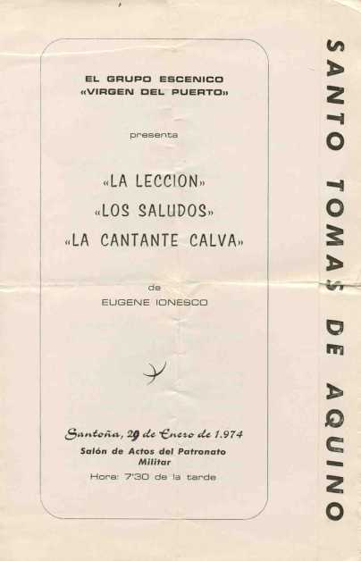

Salón de Actos del Patronato Militar. El día 29 de Enero de 1974, Fiestas en honor a Santo Tomás de Aquino, Hora 7,30 . Se representa La Lección, Los Saludos, La Cantante Calva, a cargo del grupo escénico VIRGEN DEL PUERTO. Entonces sí que se hacía buen teatro. Y vaya pedazos de actores/as... Arrontes, Petisco, Crespom Cavieces, Rosa, Lahuerta, Montalvo, Segura, Suances, Juana, Casado, María, Florencio, María José, Ana, Taboada..etc
 |